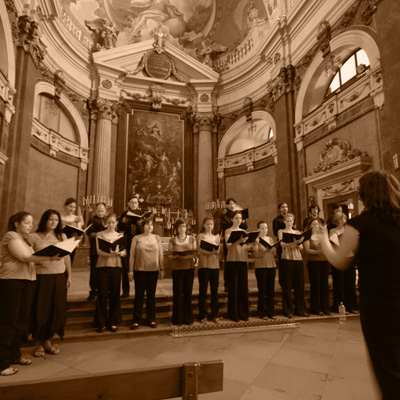
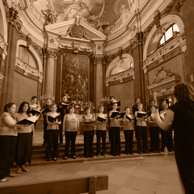

Kórusunk idén nyáron lesz 20 éves. Évadzáró koncertünk 2024. június 29-én délután négytől lesz a Kiscelli Múzeumban. 1037 Budapest, Kiscelli utca 108.
Aktuális

Következő fellépéseink:
Karácsonyi koncert időpont: 2024. december ... (pontos időpont még egyeztetés alatt).
Helyszín: Bécsikapu téri Evangélikus Templom.Próbák helyszíne és időpontja:
Budapest VI. KerületiDerkovits Gyula Általános Iskola 1068 Budapest, Városligeti fasor 4.
Minden szerdán 18:00 és 20:00 között
Tagfelvétel
Felvételt hirdetünk minden szólamba. A tagfelvétel nem vizsgával jár, hanem néhány hét próbára járás után a karvezetővel való megbeszéléssel.
Történetünk
.png)
Az énekkar nevét Alessandro Brustenghi, az Assisi-beli énekes ferences szerzetes adta a kórus legelső próbáján történt sajnálatos konyhai baleset kapcsán...
A La Caffetteria Stioppéta (felrobbant kávéfőző) 2004-ben alakult Perugiában, a város nyári egyetemének hallgatóiból, s 2005 óta az ELTE Olasz Tanszékének kórusaként működik. A tagok nagy része az egyetem valamelyik nyelvszakán tanult, s a kórus munkájába gyakran kapcsolódnak be Magyarországon tanuló külföldiek is. Az énekkar több külföldi kórussal is szakmai-baráti kapcsolatban áll, rendszeresen szervez csereutazásokat. Jártak már Erdélyben, Ausztriában, Franciaországban, Németországban, és számos alkalommal Olaszországban. Magyarországon is gyakran koncertezik a kórus: többször énekeltek többek közt a budapesti Olasz Kultúrintézetben, a Magyar Nemzeti Galériában, a Szépművészeti Múzeumban, a Fővárosi Szabó Ervin Zenei Könyvtár dísztermében, a Szent István Bazilikában, a Belvárosi Szent Mihály templomban és a Budavári evangélikus templomban. Műsorukon elsősorban középkori, reneszánsz egyházi és világi kórusművek, valamint 20. és 21. századi zeneszerzők darabjai szerepelnek. Három lemezük készült. A Stioppéta 2024 júniusában ünnepli fennállásának 20. évfordulóját.
Archívum
Karvezető

Murányi Eszter karvezető, szolfézstanár.
Gyermekként tagja volt a Magyar Rádió Gyermekkórusának, majd az Angelica leánykarban énekelt. 2002-ben szerzett diplomát a Liszt Ferenc Zeneművészeti Egyetem Tanárképző Intézetének Zeneelmélet-Szolfézs-Karvezetés szakán, emellett olasz nyelv és irodalmat hallgatott az Eötvös Loránd Tudományegyetem Bölcsészettudományi Karán (2001-2006). Végzését követően a Continuo Zeneiskolában kezdett tanítani, majd a Hubay Jenő Zeneiskola szolfézstanára, és gyermekkórusának vezetője volt. 2015-2016-ban a Pekingi Magyar Kulturális Intézetben létesített Kodály Pont oktatója, hazatérése után a Tóth Aladár Zeneiskola szolfézstanára lett.
Tagok
Szoprán
Alt
Tenor
Basszus
Felix Creatura
Képek


 



További képek
.png)